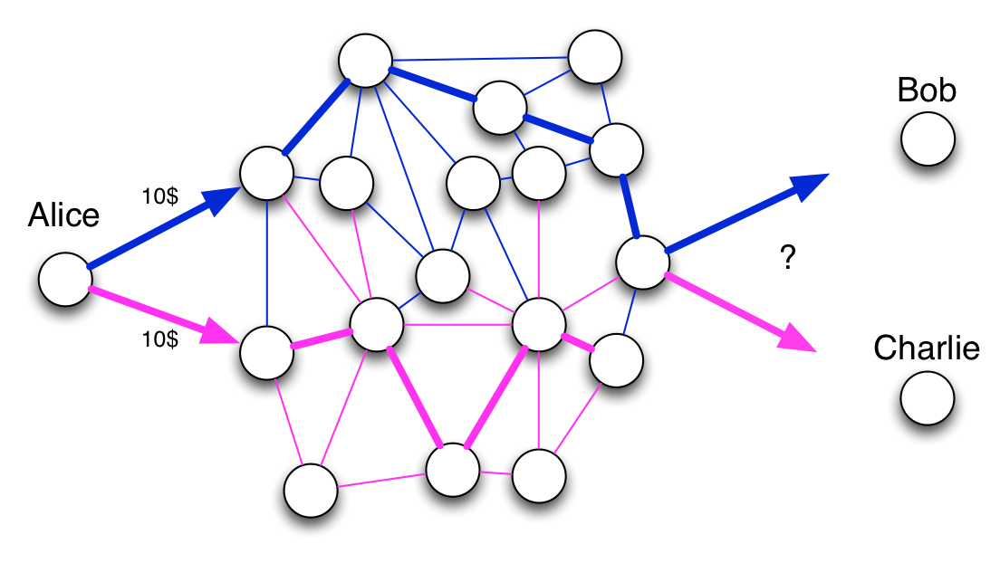
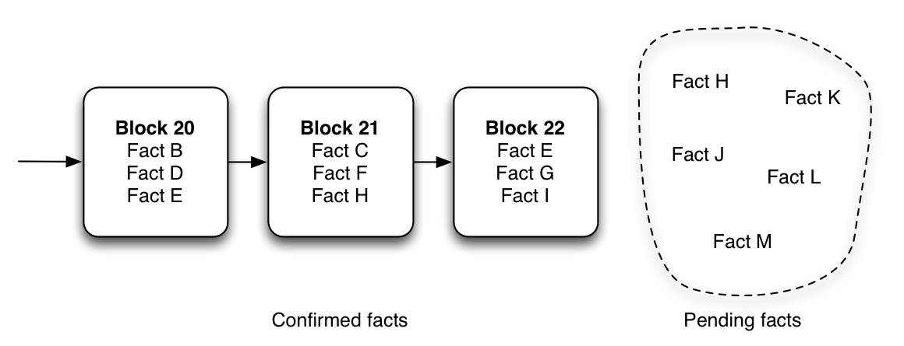
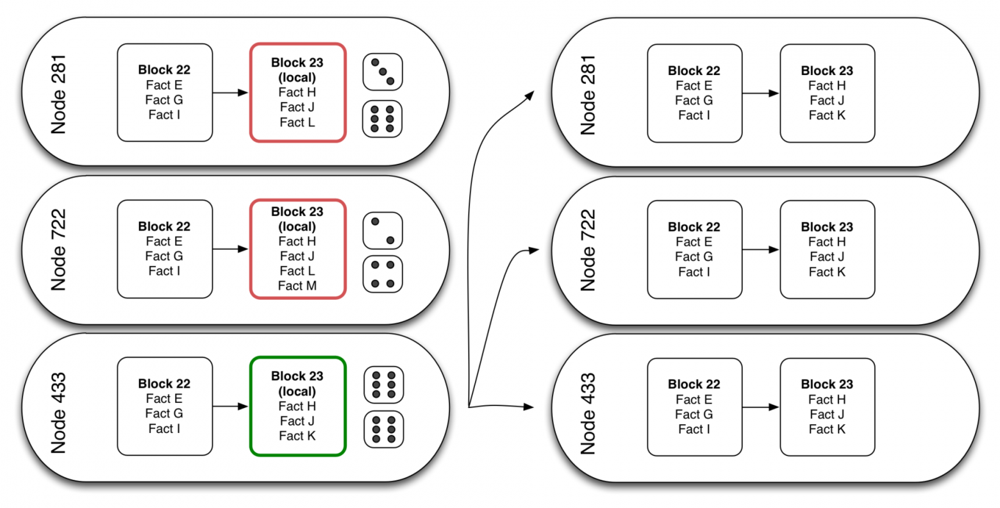
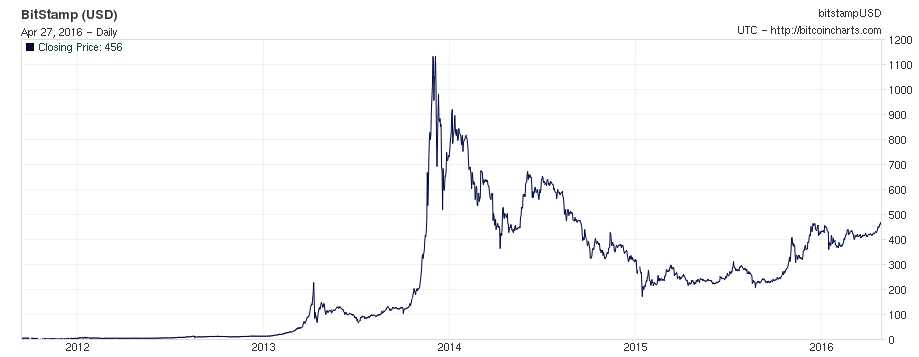
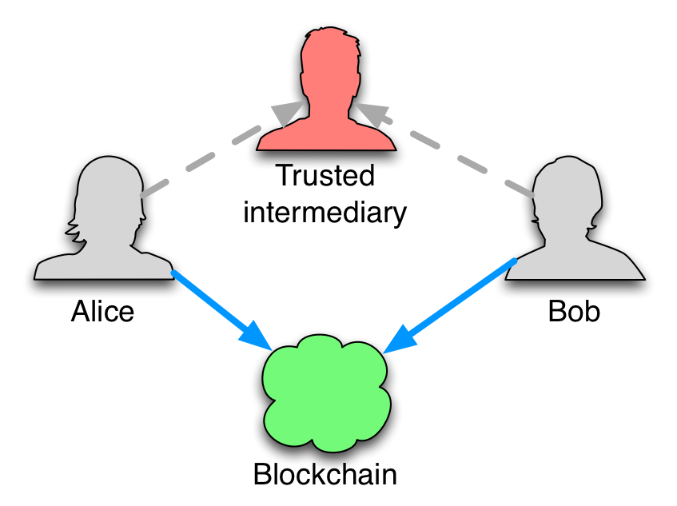

Технологии распределенных вычислений и децентрализованного хранения информации были представлены еще в 90-х годах. Однако, слово «блокчейн» стало известно лишь недавно — когда некий Сатоши Накамото показал, как эти технологии можно использовать для устройства новой финансовой системы. Так, в 2008 году появился биткоин, а вместе с этим началась история развития блокчейна.
Узнайте кто изобрел Блокчейн, перейдя по ссылке.Несмотря на то, что блокчейн создан для поддержки Bitcoin, идея блокчейна может быть определена независимо от экосистемы Биткоина. Литература обычно определяет блокчейн следующим образом:
Блокчейн – это журнал с фактами, реплицируемый на несколько компьютеров, объединенных в сеть равноправных узлов (P2P). Фактами может быть что угодно, от денежных операций и до подписания контента. Члены сети — анонимные лица, называемые узлами. Все коммуникации внутри сети используют криптографию, чтобы надежно идентифицировать отправителя и получателя. Когда узел хочет добавить факт в журнал, в сети формируется консенсус, чтобы определить, где этот факт должен появиться в журнале; этот консенсус называетсяблоком.
Децентрализованные сети с равноправными узлами не новы. Napster и BitTorrent — это P2P сети. Просто вместо обмена фильмами, участники сети блокчейна обмениваются фактами. Так в чем же реальная особенность блокчейна?
P2P-сетям, как и прочим распределенным системам, приходится решать очень сложную проблему информатики: разрешение конфликтов, или согласование. Реляционные базы данных предлагают ссылочную целостность, но такой особенности нет в распределенной системе. Если два несовместимых факта прибывают в одно и тоже время, система должна иметь правила для определения того, какой факт считать правильным.
Возьмем, к примеру, проблему двойного расходования: у Алисы есть 10$ и она отсылает их дважды Бобу и Чарли. Кто будет иметь 10$ в итоге? Для того чтобы ответить на этот вопрос, лучший способ это упорядочить факты. Если два несовместимых факта появятся в сети, то победит тот, который будет первый записан.
В P2P сетях, два факта отправленные примерно в одно время могут прибыть в разном порядке в удаленные узлы. Тогда как всей сети согласовать какой же факт пришел первым? Чтобы гарантировать целостность в P2P сети, вам нужен способ согласования порядка фактов. Вам нужна система консенсуса.
Алгоритмы консенсуса для распределенных систем это очень активное поле для исследований. Возможно, вы слышали о алгоритмах Paxos или Raft. Блокчейн реализует другой алгоритм, консенсус, основанный на доказательстве выполнения работы (proof-of-work), использующий блоки.
Блоки – это хитрый трюк, чтобы упорядочить факты в сети с недоверенными узлами. Идея проста: факты группируются в блоки, и есть только одна цепочка блоков, реплицируемая по всей сети. Каждый блок ссылается на предыдущий. То есть, если факт F находится в блоке 21, и факт E в блоке 22, то факт E рассматривается всей сетью как следующий за фактом F. Перед добавлением к блоку, факты находятся на рассмотрении, т.е. не подтверждены.
Некоторые узлы в цепочке создают новые локальные блоки с неподтвержденными фактами. Они соревнуются, чтобы узнать, станет ли их локальный блок следующим блоком в цепи для всей сети, путем броска игральных костей. Если узел выбрасывает две шестерки, то он получает возможность опубликовать его локальный блок, и все факты в этом блоке становятся подтвержденными. Этот блок посылается всем узлам в сети. Все узлы проверяют, что блок правильный, добавляют его к их копии цепи и пытаются построить новый блок с новыми неподтвержденными фактами.
Но на самом деле узлы не просто бросают пару игральных костей. Задача, которую решают майнеры в блокчейне подразумевает бросок огромного количества игральных костей. По замыслу, обнаружение случайного ключа для проверки блока маловероятно. Это предотвращает мошенничество и делает сеть безопасной (до тех пор, пока злоумышленник не имеет контроль более чем над половиной узлов в сети). Как следствие, новые блоки будут публиковаться в цепь через фиксированный интервал времени. В Bitcoin блоки публикуются, в среднем, каждые 10 минут.
В Bitcoin, задача представляет из себя двойной SHA-256 хэш строки из непроверенных фактов, идентификатора предыдущего блока и случайной строки. Узел выигрывает, если его хэш содержит как минимум n ведущих нулей.
// проигрышный хэш для Bitcoin
787308540121f4afd2ff5179898934291105772495275df35f00cc5e44db42dd
// выигрышный хэш для Bitcoin, если n=10 00000000009f766c17c736169f79cb0c65dd6e07244e9468bc60cde9538b551e
Число n время от времени корректируется, чтобы сохранить длительность вычисления блока, несмотря на изменение количества узлов. Это число называется сложностью. Другие реализации блокчейна используют специальные методы хэширования, которые препятствуют использованию графических процессоров для вычислений (например, требуют передачи больших объемов памяти).
Процесс поиска блоков называется майнингом. Все дело в том, что так же как и добыча золота (прим. перев. Mining — добыча (англ.)), майнинг блоков приносит экономическое вознаграждение — некоторую форму денег. Вот почему людей, которые содержат узлы в блокчейне, называют майнерами.
Примечание: По умолчанию, узел не майнит – он просто получает блоки, которые майнят другие узлы. Это добровольный процесс — превращение узла в узел майнер.
Каждую секунду, каждый майнер тестирует тысячи случайных строк, чтобы сформировать новый блок. То есть работа майнера в блокчейне требует огромное количество компьютерных ресурсов (памяти и CPU). Вот почему >вы должны платить, чтобы записывать факты в блокчейн. С другой стороны, чтение фактов бесплатно: вам достаточно запустить собственный узел и вы будете получать полную историю фактов созданную другими узлами. Итак, подведем итог:
Речь здесь идет не о реальных деньгах. Как факт, каждый блокчейн имеет свою собственную (крипто-)валюту. Она называется bitcoin (BTC) в сети Bitcoin, ether (ETH) в сети Ethereum, и т.д. Чтобы совершить платеж в сети Bitcoin, вы должны заплатить небольшую комиссионные в bitcoin'ах – так же как вы должны были бы заплатить комиссионные банку. Однако, откуда взялись первые деньги?
Майнеры получают вознаграждение за поддержание работы и безопасности сети. Каждый раз, когда они успешно формируют блок, они получают фиксированное количество криптовалюты. В Bitcoin вознаграждение – 25 BTC за блок, в Ethereum– 5 ETH за блок. Таким образом, блокчейн сам генерирует свои собственные деньги.
Криптовалюты быстро стали конвертируемы в реальные деньги стоимость определяется только спросом и предложением, поэтому криптовалюта — это объект спекуляции. К моменту написания статьи, процесс майнинга bitcoin все еще требовал меньше расходов на энергию и оборудование, чем деньги которые вы можете получить, продавая монеты, полученные за него. Вот почему люди добавляют новых майнеров каждый день, надеясь превратить электричество в деньги. Однако колебания в стоимости BTC делают майнинг все менее и менее выгодным.
До сих пор, мы в основном говорили о блокчейне как о хранилище фактов, но он также может исполнять программы. Некоторые блокчейны позволяют каждому факту содержать мини программу. Такие программы реплицируются вместе с фактом, и каждый узел выполняет их, получая факт. В Bitcoin это используется для совершения транзакций с условиями, например: Боб получит 100 BTC от Алисы только если сегодня 29 февраля.
Другие блокчейны разрешают более сложные контракты. Например, в Ethereum каждый контракт несет в себе мини-базу данных изменения ее данных. Поскольку контракты реплицируются по всем узлам, то и их базы данных тоже. Каждый раз, когда пользователь вызывает метод из контракта и, соответственно, изменяет данные, эта команда реплицируется и повторяется всей сетью. Это позволяет создать распределенный консенсус для выполнения обещаний.
Эта идея сопряжения блокчейна с реальным миром при помощи заранее запрограммированных условий и их передачи всем узлам называется умный контракт. Контракт — это обещание, которое стороны подписывают, чтобы закрепить его юридически. Умный контракт – это то же самое, только закрепление происходит «технически», а не «юридически». Благодаря этому отпадает необходимость в нотариусе или любом другом полномочном лице, признаваемом обеими сторонами.
Представьте, что вы хотите сдать ваш дом на неделю за 1000$ c 50%-ой предоплатой. Вы и арендующий подписываете контракт, вероятнее всего, написанный юристом. Вам также нужен банк для получения платежа. В начале недели вы просите о депозите в 5000$; арендующий предоставляет вам чек на него. В конце недели он отказывается заплатить оставшиеся 50%. Вы также узнаете, что он сломал окно, и чек с депозитом ведет на пустой счет. Теперь вам понадобится адвокат, чтобы передать ваш договор на аренду в суд.
Умные контракты в блокчейне позволяют вам обойтись без банка, юриста, адвоката и суда. Просто напишите программу, которая определяет, сколько денег должно быть передано в случае определенных условий:
Добавьте этот умный контракт в блокчейн и больше никаких проблем. Ко времени указанному в контракте произойдет передача денег и, если владелец сможет представить доказательства механических повреждений, он автоматически получит 5000$ (и нет никакой нужды в депозите).
Вероятно, вы задаетесь вопросом, как получить доказательства механических повреждений. Здесь в дело вступает «интернет вещей» (IoT). Для взаимодействия с реальным миром блокчейну необходимы датчики и приводы. Блокчейн революция невозможна без IoT революции.
Такие приложения, опирающиеся на умные контракты, называются децентрализованными приложениями или DApps.
Умные контракты легко расширяются на умную собственность и многие другие умные вещи. Запомнить надо только одно: «умные» означает «нет посредников» или «исполняется технически». Блокчейн – это новый способ ведения бизнеса без посредников – также как продажа музыки в Интернете.
Как мне кажется, лучший способ понять блокчейн – это взглянуть на него с разных сторон.
Что он делает? Блокчейн позволяет безопасно распространять и/или обрабатывать данные между несколькими лицами через недоверенную сеть. Данными может быть что угодно, но наиболее интересным вариантом данных является возможность передачи информации, которая требует наличия третьей доверенной стороны. Примерами такой информации являются деньги (требуют участия банка), права на собственность (требуют участия нотариуса), договор на заем и т.д. В сущности, блокчейн устраняет необходимость в участии третьего доверенного лица.
Как он работает? С технической точки зрения, блокчейн является новшеством, которое опирается на три понятия: P2P сети, асимметричная криптография и распределенный консенсус, основанный на решении математической задачи. Ни одна из этих идей не является новой сама по себе. Если вы не разбираетесь во всех, не беспокойтесь: немногие люди обладают необходимыми знаниями, чтобы разработать блокчейн (что является проблемой). Но отсутствие полного понимания блокчейна не мешает вам использовать его, так же как вы можете создавать веб-приложения, не зная о медленном старте TCP или центрах сертификации.
На что он похож? Блокчейн можно рассматривать как (слабо)синхронизированную базу данных реплицируемую столько же раз, сколько узлов в сети, или как суперкомпьютер, образованный комплексом всех CPU/GPU входящих в него узлов. Вы можете использовать этот суперкомпьютер для хранения и обработки данных, т.е. также как вы можете использовать удаленный API. Отличие только в том, что вам не нужно создавать бэкэнд, и вы можете быть уверены, что данные надежно защищены и обрабатываются в сети должным образом.
Технология блокчейна одновременно интригующая и захватывающая. Станет ли она революцией, которую предсказывают компьютерные гуру? Или это просто экономический пузырь опирающийся на непрактичные идеи? После изучения большого количества информации на эту тему мы все еще не можем сформировать окончательное мнение.
Когда мы сталкиваемся с неопределенностью, мы знаем отличный способ с ней разобраться: пробовать. Это как раз то, что мы решили делать. Читайте следующую статью в серии, чтобы увидеть, что мы узнали, создавая приложение работающее на блокчейне.